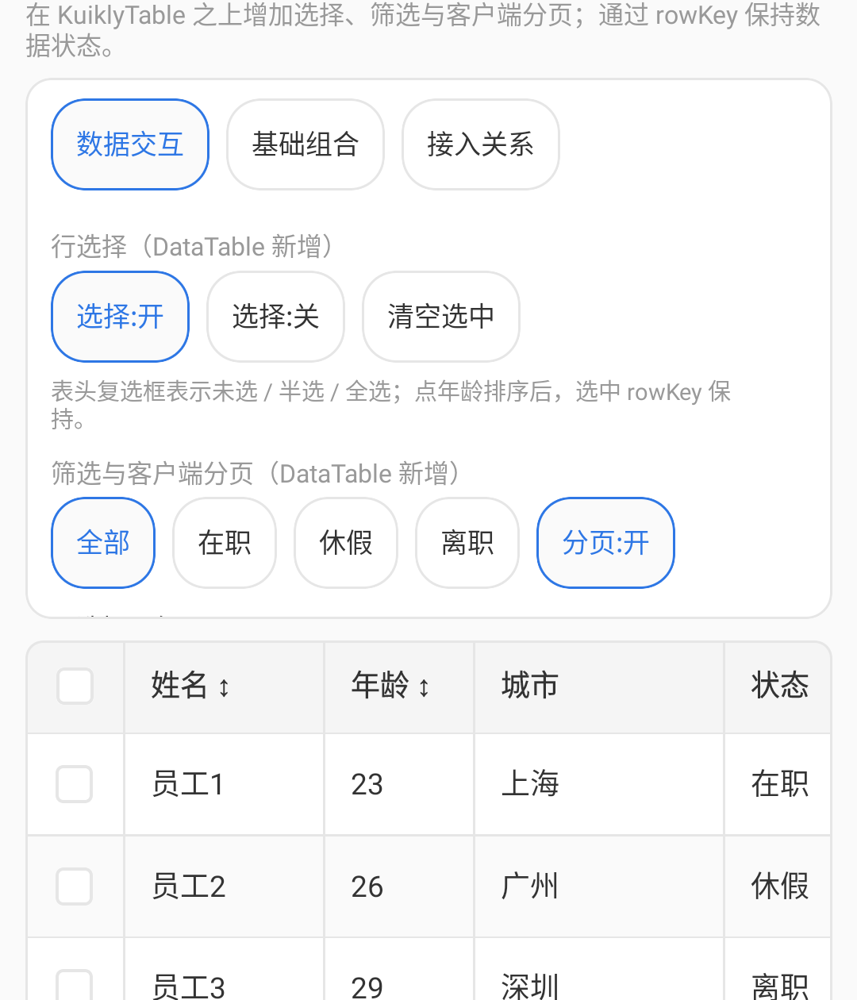

KuiklyTable
基于 KuiklyUI 的跨端表格组件，支持 Android、iOS、鸿蒙。
仓库提供两级正式表格：TableView / KuiklyTable（基础表格）与 DataTableView / KuiklyDataTable（数据表格）。KuiklyDataTable 复用 KuiklyTable 的列布局、行渲染、主题与 renderer，叠加行选择、筛选与客户端分页，不重复实现基础能力。
| 入口 | 定位 | 状态 |
|---|---|---|
TableView / KuiklyTable | 基础展示、布局、分隔线、滚动、固定表头 / 左固定列、主题、renderer | 已交付 |
DataTableView / KuiklyDataTable | 行选择、全选 / 半选、筛选、客户端分页；复用 KuiklyTable 全部能力 | 已交付 |
能力关系：KuiklyDataTable 是 KuiklyTable 的组合封装（Kuikly 组合组件），拥有 KuiklyTable 的全部能力——列宽与对齐、排序、滚动、固定表头、样式主题、行高亮、自定义单元格 / 表头、超出省略、分隔线与圆角、固定列、加载 / 空态、触底加载、展示模式、虚拟滚动对两者同样适用。KuiklyDataTable 章节只讲新增能力（行选择、筛选与分页）。对应地，DataTableAttr / DataTableEvent 继承 TableAttr / TableEvent，只新增独有属性与事件。
快速接入
环境要求（Kuikly 依赖坐标与 Kotlin 版本绑定，须一致）：
| 依赖 | 版本 |
|---|---|
| Kuikly | 2.23.2（坐标 2.23.2-2.1.21；鸿蒙 2.23.2-2.0.21-ohos） |
| Kotlin | 2.1.21（鸿蒙 2.0.21-ohos） |
| KSP | 2.1.21-2.0.1 |
将本仓库的 KuiklyTable 模块引入你的 Kuikly 工程：
// settings.gradle.kts
include(":KuiklyTable")
project(":KuiklyTable").projectDir = file("path/to/KuiklyTable")// 业务模块 build.gradle.kts
kotlin {
sourceSets {
val commonMain by getting {
dependencies {
implementation(project(":KuiklyTable"))
}
}
}
}基础表格
列由 ColumnModel 定义，数据经 data 传入，rowKey 提供稳定行标识。开箱默认：Grid 网格线（外框 + 行线 + 列竖线）、8dp 圆角、斑马纹与固定表头。
data class User(val id: String, val name: String, val age: Int, val email: String)
TableView<User> {
attr {
columns.addAll(
listOf(
ColumnModel(key = "name", title = "姓名", accessor = { it.name }, width = 80f),
ColumnModel(
key = "age",
title = "年龄",
accessor = { it.age.toString() },
width = 60f,
sortable = true,
sortComparator = compareBy { it.age },
),
ColumnModel(
key = "email",
title = "邮箱",
accessor = { it.email },
minWidth = 140f,
flex = 2f,
),
)
)
data = users
rowKey = { it.id }
zebraStripe = true
fixedHeader = true
// lineMode 默认 TableLineMode.Grid：外框 + 行线 + 列竖线
// 无竖线：lineMode = TableLineMode.Horizontal；全部关闭：TableLineMode.None
}
event {
rowClick = { user -> /* 行点击 */ }
cellClick = { info -> /* 单元格点击 */ }
sortChange = { state -> /* 排序变化 */ }
}
}
列宽与对齐的表格
两种列宽策略可混用：固定 width，或弹性 minWidth + flex（剩余空间按权重分配且不小于最小宽）。
对齐默认 Start（左对齐）；未显式设置时数值列也不会自动居右。
// 固定宽
ColumnModel(key = "name", title = "姓名", accessor = { it.name }, width = 80f)
// 弹性宽
ColumnModel(key = "email", title = "邮箱", accessor = { it.email }, minWidth = 140f, flex = 2f)
// 显式对齐：Start / Center / End
ColumnModel(
key = "age",
title = "年龄",
accessor = { it.age.toString() },
alignment = ColumnAlignment.End,
)可排序的表格
列上开启 sortable 后，表头点击在 升序 → 降序 → 无 三态间循环。sortComparator 提供自定义比较（如按数值而非文本）。排序只影响展示顺序，不修改传入的 data。
ColumnModel(
key = "age",
title = "年龄",
accessor = { it.age.toString() },
sortable = true,
sortComparator = compareBy<User> { it.age },
)event {
sortChange = { state -> /* 当前排序列与方向 */ }
}
横纵滚动的表格
列总宽超出表格宽度时横向滚动，表头与内容横向同步；行数超出高度时纵向滚动。表格默认沿父容器撑满，也可用 tableWidth 显式指定宽度。
attr {
// tableWidth = 600f // 默认 null：沿父容器撑满
}需要回到顶部时调用 scrollToTop：
val tableRef = TableView<User> { /* ... */ }
tableRef.scrollToTop(animated = true)
固定表头的表格
fixedHeader 默认开启：纵向滚动时表头固定在顶部，不随内容滚出。
attr {
fixedHeader = true // 默认 true；设为 false 表头随内容滚动
}可自定义样式的表格
表格只消费传入的 themeColors，不跟随 App 全局主题。预设 Light / Dark / Blue，需要微调时 copy 覆盖个别语义色。色值为 Long ARGB（0xAARRGGBB）。
attr {
// 1) 一行切换预设
themeColors = TableThemeColors.Dark
// 2) 只改表头底与选中行，其余跟随 Dark
// themeColors = TableThemeColors.Dark.copy(
// headerBackground = 0xFF2A2A2A,
// selectedRowBackground = 0xFF1A3A5C,
// )
}常用语义色：headerBackground / rowBackground(Alt) / selectedRowBackground / cellText(Secondary) / dividerColor / gridLine。

行高亮的表格
斑马纹默认开启：隔行底色来自主题 rowBackgroundAlt，便于逐行对照阅读。行选择产生的选中高亮见可选中行的表格。
attr {
zebraStripe = true // 默认 true；设 false 关闭
}自定义单元格的表格
cellRenderer 接管单元格内容；未配置时回退默认文本。默认文本单元格在 Web 端带 HTML title 悬停提示，自定义 renderer 不自动注入。
ColumnModel<User>(
key = "status",
title = "状态",
accessor = { it.status },
width = 90f,
enableRowClick = true,
enableCellClick = false,
cellRenderer = { user, _ ->
View {
attr { flex(1f); allCenter() }
Text {
attr { text(user.status); fontSize(12f) }
}
}
},
)点击优先级：截断溢出提示 > cellClick > rowClick。操作列通常两个开关都关，由 renderer 内 Button 自行处理点击与按压。

自定义表头的表格
headerRenderer 接管表头内容（参数为该列 ColumnModel）；未配置时回退默认文本。与排序组合时，排序箭头由组件绘制，自定义内容不参与排序点击。
ColumnModel<User>(
key = "status",
title = "状态",
accessor = { it.status },
width = 90f,
headerRenderer = { column ->
View {
attr { flex(1f); allCenter() }
Text {
attr { text("★ ${column.title}"); fontSize(12f) }
}
}
},
)单元格超出省略的表格
默认文本单元格超长自动截断为单行省略。组件负责检测截断并上报点击事件与估算位置（TableOverflowCellInfo：完整文本、所在行列、单元格坐标），提示浮层由业务绘制——Showcase 演示了完整实现。Web 端默认文本单元格自带 HTML title 悬停提示，无需处理。
event {
// 截断单元格被点击：info 含完整文本与估算位置，业务据此绘制浮层
overflowCellClick = { info ->
if (info.isOverflow) showOverflowTip(info.text, info.estimatedCellX, info.estimatedCellY)
}
// 提示关闭时机（再次点击 / 滚动 / 点击其他位置）
overflowTipDismiss = { hideOverflowTip() }
}点击优先级：截断溢出提示 > cellClick > rowClick；自定义 cellRenderer 的单元格不参与溢出检测。
分隔线与圆角的表格
lineMode 控制表格线（外框 / 表头线 / 行线 / 列线），cornerRadius 控制根容器圆角，两者互不影响。默认 Grid + 8dp。预设线色走主题 dividerColor（未设回退 gridLine）。
attr {
lineMode = TableLineMode.Grid // 默认：外框 + 表头线 + 行线 + 列线
// TableLineMode.Horizontal // 仅表头底线与行线
// TableLineMode.None // 全部关闭
cornerRadius = TableCornerRadius.Default // 0 / 8 / 12 或任意 dp
}Custom 模式逐项指定颜色、宽度，字段为 null 表示关掉该线：
lineMode = TableLineMode.Custom(
TableLineStyle(
outer = TableStroke(0xFF2E77E5, 2f),
header = TableStroke(0xFF2E77E5, 2f),
row = TableStroke(0xFF2E77E5, 2f),
column = TableStroke(0xFF2E77E5, 2f),
listRow = TableStroke(0xFF2E77E5, 2f),
),
)
Grid（默认）：外框 + 行线 + 列竖线
Horizontal：仅表头底线与行线，无竖线固定列的表格
开启 fixedFirstColumn 后，横向滚动时第一列保持可见；DataTable 开启选择时固定「选择列 + 第一业务列」。
attr {
fixedFirstColumn = true
rowHeight = 48f // 固定列要求固定行高
columns.add(
ColumnModel(
key = "name",
title = "姓名",
accessor = { it.name },
width = 96f, // 固定列必须显式 width
),
)
}- 被固定的列必须配置显式正数
width - 只有 1 列时忽略，仍走普通横向滚动
- 不与
Windowed、动态行高组合


加载状态的表格
loading 开启遮罩加载态：保留旧内容并禁止下方交互，避免加载期间误触。可用 loadingRenderer 自定义加载内容。
attr {
loading = isLoading
// loadingRenderer = { /* 自定义加载态 */ }
}空表格
data 为空时显示占位文案 emptyText；可用 emptyRenderer 自定义空态内容。
attr {
data = emptyList()
emptyText = "暂无数据"
// emptyRenderer = { /* 自定义空态 */ }
}
触底加载的表格
loadMore 是触底回调：组件只负责触发与展示底部加载状态，分页和请求由业务层负责。loadMoreThresholdRows 控制距底部约 N 行时提前触发。
attr {
hasMore = pageHasMore
loadingMore = isLoadingMore
// loadMoreThresholdRows = 3 // 距底部约 N 行触发
}
event {
loadMore = { fetchNextPage() }
}Table / List 模式的表格
显式 Table 或 List（grouped 卡片）模式。List 模式指定主字段列与状态列，适合窄屏场景。
attr {
displayMode = TableDisplayMode.List
listPrimaryColumnKey = "name"
listStatusColumnKey = "status"
}
虚拟滚动的表格
默认 Standard 为每行创建 DSL 节点。数据量大时改用 Windowed（基于 Kuikly vforLazy），按窗口挂载行节点。
attr {
data = users
rowHeight = 48f
fixedFirstColumn = false
rowRenderMode = TableRowRenderMode.Windowed(maxRenderedRows = 160)
}- 只限制挂载的行节点，完整
data仍在内存，排序作用于全量 - 创建时选定模式后不要在同一 Table 上切换
- 暂不支持动态行高与固定列组合
maxRenderedRows建议按可见行数 × 3 估算，默认 60；太小快速滚动会短暂空白

可选中行的表格
KuiklyDataTable 章节只讲新增能力；上述 KuiklyTable 全部章节（列宽 / 排序 / 滚动 / 主题 / 渲染 / 分隔线 / 固定列 / 状态 / 模式 / 大数据）对 DataTable 同样适用。
DataTableView 复用 TableView。开启 enableRowSelection 后注入选择列与行高亮；关闭时无选择列、清空高亮。选中身份是 rowKey：排序只改展示顺序，selectedKeys 按 rowKey 保持。
DataTableView<User> {
attr {
flex(1f) // 撑满父容器，否则拿不到高度不渲染
enableRowSelection = true
selectedKeys = currentSelectedKeys
data = users
rowKey = { it.id }
columns.addAll(/* 同 TableView */)
}
event {
selectionChange = { keys -> currentSelectedKeys = keys }
}
}表头复选框三态：未选 / 半选 / 全选。半选或未选时点击 → 全选当前可见行；全选再点 → 清空当前可见选中。


可筛选的表格
filterPredicate 在管线最前：源 data → 筛选 → 单列排序 → 分页。null 表示不过滤。不提供内建全局搜索框，业务层可自行过滤后重传 data。筛选条件变化会重置到第一页。
attr {
filterPredicate = { it.status == "在职" } // null 表示不过滤
}
可分页的表格
enablePagination 开启客户端分页：pageIndex / pageSize 受控传入，pageChange / pageSizeChange 回写。翻页自动回顶；筛选或页大小变化会重置到第一页。
attr {
enablePagination = true
pageIndex = currentPage
pageSize = 10
pageSizeOptions = listOf(5, 10, 20) // 分页栏「N 条/页 ▾」下拉选项
}
event {
pageChange = { index -> currentPage = index }
pageSizeChange = { size -> pageSize = size }
}每页行数以「N 条/页 ▾」下拉选择器切换，选项由 pageSizeOptions 配置。


API 参考 · TableView
fun <T> ViewContainer<*, *>.TableView(init: TableView<T>.() -> Unit)
fun <T> ViewContainer<*, *>.DataTableView(init: DataTableView<T>.() -> Unit)| 方法 | 说明 |
|---|---|
scrollToTop(animated: Boolean = false) | 滚动到顶部 |
TableAttr
| 属性 | 类型 | 默认值 | 说明 |
|---|---|---|---|
columns | ObservableList<ColumnModel<T>> | [] | 列定义 |
data | List<T> | [] | 数据源（组件不修改外部列表） |
rowKey | ((T) -> Any)? | null | 稳定行标识；未配置时用源索引 |
tableWidth | Float? | null | null 表示沿父容器撑满 |
zebraStripe | Boolean | true | 斑马纹 |
lineMode | TableLineMode | Grid | None / Horizontal / Grid / Custom(style) |
cornerRadius | Float | 8f | 根容器圆角（dp）；0 无圆角 |
cellPaddingH | Float | 12f | 水平内边距 |
cellPaddingV | Float | 10f | 垂直内边距 |
rowHeight | Float | 0f | 0 表示内容自适应 |
fixedHeader | Boolean | true | 固定表头 |
fixedFirstColumn | Boolean | false | 固定第一列；被固定列须显式 width；需固定行高，不与 Windowed 组合 |
themeColors | TableThemeColors | Light | 语义色；预设 Light / Dark / Blue |
displayMode | TableDisplayMode | Table | Table / List |
rowRenderMode | TableRowRenderMode | Standard | Windowed(n) 限制挂载行数 |
listPrimaryColumnKey | String? | null | List 模式主字段列 |
listStatusColumnKey | String? | null | List 模式状态列 |
loading | Boolean | false | 加载中 |
emptyText / loadingText | String | 默认文案 | 状态文案 |
emptyRenderer / loadingRenderer | DSL? | null | 自定义状态内容 |
hasMore / loadingMore | Boolean | false | 加载更多状态 |
loadMoreThresholdRows | Int | 3 | 距底部约 N 行触发 |
enableOverflowCellClick | Boolean | true | 截断文本点击 |
TableEvent
| 事件 | 说明 |
|---|---|
rowClick | 行点击 |
cellClick | 单元格点击（含行列信息） |
sortChange | 排序状态变化 |
overflowCellClick | 截断单元格点击 |
overflowTipDismiss | 溢出提示关闭 |
loadMore | 触底加载更多 |
ColumnModel
| 字段 | 类型 | 默认值 | 说明 |
|---|---|---|---|
key | String | — | 列唯一标识 |
title | String | — | 表头文案 |
accessor | (T) -> String | — | 默认文本取值 |
width | Float? | null | 固定列宽；null 时弹性 |
minWidth | Float | 100f | 最小宽度（弹性列） |
flex | Float | 1f | 剩余空间权重 |
alignment | ColumnAlignment | Start | Start / Center / End；数值列不自动居右 |
sortable | Boolean | false | 是否可排序 |
sortComparator | Comparator<T>? | null | 自定义比较器 |
cellRenderer | DSL? | null | 自定义单元格 |
headerRenderer | DSL? | null | 自定义表头 |
enableRowClick | Boolean | true | 该列是否允许触发 rowClick |
enableCellClick | Boolean | false | 该列是否允许触发 cellClick |
DataTableAttr
按 Kuikly 组件惯例分为基础属性与独有属性：基础属性即 TableAttr 全部属性（Kotlin 继承，直接可用）；独有属性如下表：
| 属性 | 类型 | 默认值 | 说明 |
|---|---|---|---|
enableRowSelection | Boolean | false | 注入选择列 + 行高亮；关闭时清空 |
selectedKeys | List<Any> | [] | 受控选中 rowKey 列表 |
selectionColumnWidth | Float | 48f | 选择列宽 |
filterPredicate | ((T) -> Boolean)? | null | 筛选谓词；null 不过滤 |
enablePagination | Boolean | false | 客户端分页 |
pageIndex | Int | 0 | 当前页（0 起） |
pageSize | Int | 10 | 每页行数 |
pageSizeOptions | List<Int> | [5, 10, 20] | 分页栏「N 条/页 ▾」下拉选项 |
DataTableEvent
基础事件即 TableEvent 全部事件（Kotlin 继承，直接可用）；独有事件如下表：
| 事件 | 说明 |
|---|---|
selectionChange | 勾选或表头全选变化后回调选中 keys |
pageChange | 页码变化 |
pageSizeChange | 页大小变化 |
androidApp 后默认进入 table_home，再进入 table_basic（分章节验证 KuiklyTable）或 table_data（数据交互 / 基础组合 / 接入关系页签验证 KuiklyDataTable）。